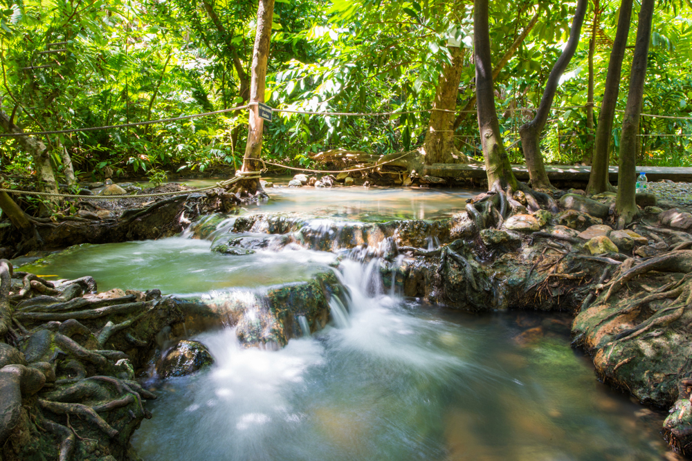
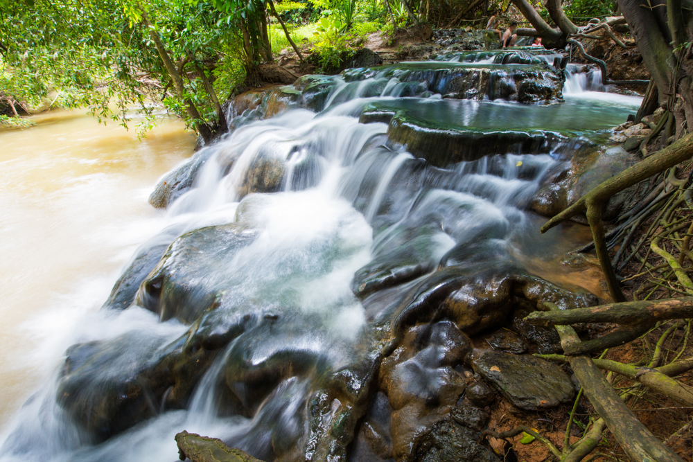
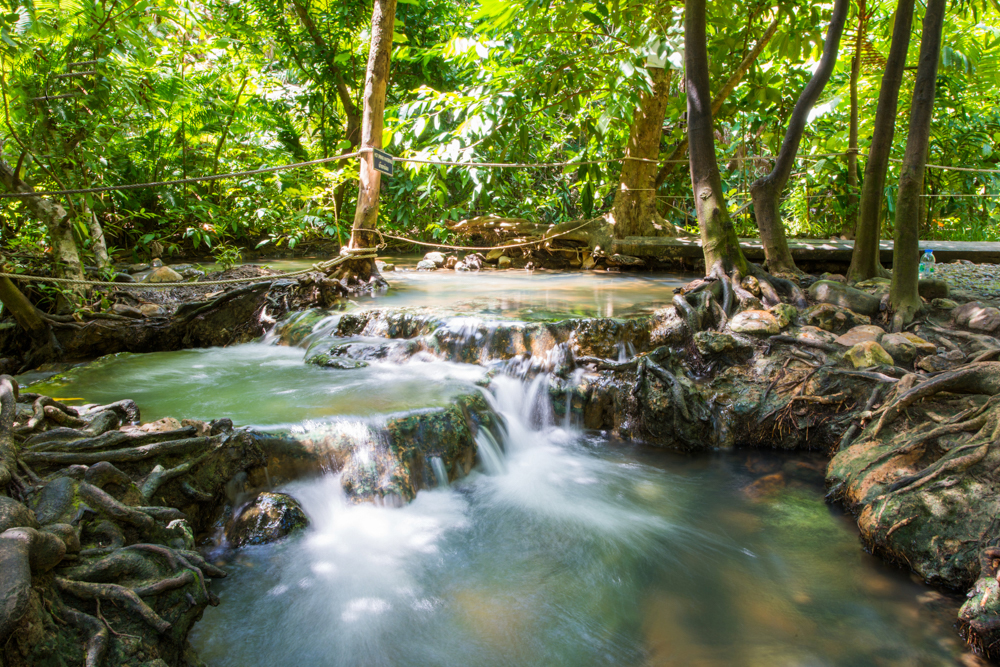
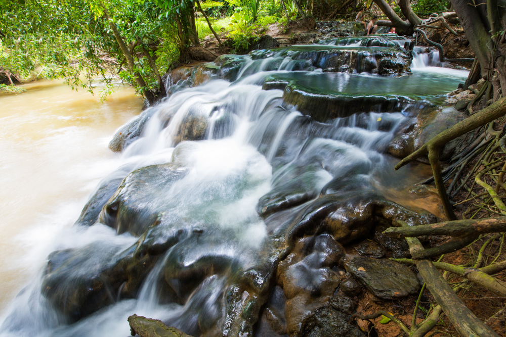

ท่าปอมคลองสองน้ำ กระบี่ แผนที่
ถ้าใครมีโอกาสมาเที่ยวกระบี่ แล้วอย่าลืมแวะมาเที่ยวน้ำตกร้อนคลองท่อมกันด้วยนะครับ ที่เที่ยวเมืองไทย ไม่ไปไม่รู้จริงๆ ไม่รู้เลยว่ายังมีที่เที่ยวสวยๆ รอให้ไปสัมผัสอีกมากมาย ที่น้ำตกร้อน
สวัสดีครับ..พอดีผมได้มีโอกาสไปเที่ยวกระบี่มาครับ และได้ไปเที่ยวที่พาเที่ยวน้ำตกร้อนคลองท่อมมาเลยจะมารีวิวให้ชมกันครับว่า มีความน่าสนใจยังไงและสามารถเดินทางไปยังไงได้บ้าง สำหรับการเดินทางนั้นผมเริ่มต้นจากที่สนามบินกระบี่ครับ ก็คือลงเครื่องเช้ารถแล้วก็ขับตรงมาที่น้ำตกร้อนเลยp>
“น้ำตกร้อน” ตั้งอยู่ตำบลคลองท่อมเหนือ อำเภอคลองท่อม จ.กระบี่ เป็นสถานที่ท่องเที่ยวชื่อดังของ จ.กระบี่ มีลักษณะเป็นน้ำตกร้อน แต่น้ำไม่ถึงกับร้อนมาก อุณหภูมิประมาณ 40 – 50 องศาเซลเซียล เป็นน้ำร้อนที่ซึมมาจากผิวดินซึ่งมีป่าละเมาะปกคลุมอยู่ ตัวน้ำตกร้อน มีขนาดเล็ก สูงประมาณ 5 เมตร มี 3 ชั้น แต่ที่พิเศษ คือ แต่ละชั้น มีแอ่งลักษณะคล้ายอ่างอาบน้ำ ซึ่งเกิดจากการก่อตัวของตะกอนหินปูนในน้ำร้อน ชั้นละ 4 – 5 อ่าง ลึกประมาณ 1 – 1.5 เมตร ในน้ำมีสารกำมะถัน เจือจางเป็นส่วนประกอบ มีอุณหภูมิพอเหมาะสามารถอาบน้ำและแช่ได้ เป็นสถานที่ที่นักท่องเที่ยวนิยมไปอาบน้ำเพื่อสุขภาพ
ท่าปอมคลองสองน้ำนั้นอยู่ห่างจากสนามบินกระบี่ประมาณ 40 กิโลเมตรครับ ใช้เวลาเดินทางประมาณ 42 นาทีครับ วิธีเดินทางที่สะดวกที่สุดก็คือการเช่ารถและขับไปครับ ถ้าขับรถไม่เป็นก็ต้องใช้บริการวันเดย์ทริปได้ครับ สามารถสอบถามได้จากโรงแรมที่พักได้เลยครับ
ค่าเข้าชม 20 บาทสำหรับผู้ใหญ่ และ 10 บาทสำหรับเด็ก
ต่างชาติ เด็ก 100 บาท ผู้ใหญ่ 200 บาท
เปิดให้เข้าชมตั้งแต่ 08.30 น. ถึง 17.00 น. ทุกวัน
ทางเดินไปยังน้ำตก ระยะทางประมาณ 200 เมตร
ข้อควรระวัง ตามนี้เลยครับโปรดปฎิบัติตามกันด้วยนะครับ
 



แล้วก็มาถึงที่เป็นไฮไลท์ของที่นี่ น้ำตกร้อน หน้าตาเหมือนน้ำตกเลย แต่หากได้ลองลงไปแช่น้ำเป็นอันต้องร้องว้าวแน่ๆ เพราะน้ำที่นี่ไม่ได้ดูเย็นเหมือนที่มองเห็นจากด้านบน แต่จะอุ่นๆ ร้อนๆ กำลังดี เหมือนแช่อยู่ในน้ำพุร้อน แปลกจริงๆ
ลำธารหน้าตัวน้ำตก สามารถลงเล่นน้ำได้
จุดชมวิว
แอ่งแช่ตัว แข่ได้ประมาณ 10 คน

บ่อแช่เท้า
น้ำตกร้อนที่นี่จะมีหลายแอ่ง ไหลลงมาเป็นขั้นๆตามภาพที่เห็น สามารถลงไปแช่น้ำได้ อุณหภูมิอยู่ที่ 40 – 50 องศาเซลเซียสโดยประมาณ แว๊บแรกที่ลงไปแช่จะรู้สึกร้อน พอร่างกายปรับตัวได้นี่อุ่นสบาย คลายเมื่อยล้ากันเลยทีเดียว แนะนำว่าควรแช่ประมาณ
15 – 20 นาทีต่อครั้ง เพื่อให้ดีต่อสุขภาพ นานกว่านี้อาจจะหน้ามืดเป็นลมได้
น้ำอุ่นๆไหลลงมาเรื่อยๆตามลำดับ ส่วนด้านล่างนี่ ลองหย่อนขาดูเป็นน้ำเย็นนะ

บริเวณใกล้ๆกัน ก็มีบ่อน้ำร้อนให้ได้มานั่งแช่กันเพื่อสุขภาพด้วย ถึงสองบ่อด้วยกัน หากไม่แช่ตรงน้ำตกร้อน ก็มาแช่ที่บ่อนี้ได้เช่นกันจ้า แต่แนะนำให้แช่ที่น้ำตกร้อนดีกว่า เพราะได้จะฟีลที่แปลกใหม่ไม่เหมือนใคร
ถ้าใครมีโอกาสมาเที่ยวกระบี่ แล้วอย่าลืมแวะมาเที่ยวน้ำตกร้อนคลองท่อมกันด้วยนะครับ ที่เที่ยวเมืองไทย ไม่ไปไม่รู้จริงๆ ไม่รู้เลยว่ายังมีที่เที่ยวสวยๆ รอให้ไปสัมผัสอีกมากมาย ที่น้ำตกร้อน